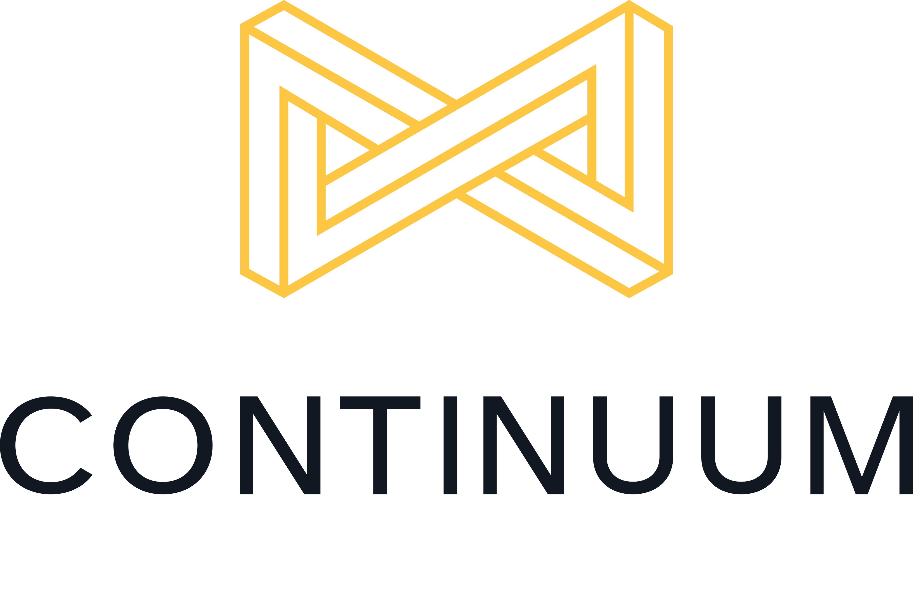

Wie ben ik?
Ik ben Daisy. Wat fijn dat je mijn portfolio aan het bekijken bent!
Voor ik begon aan de opleiding Switch2IT, heb ik ook al de opleiding Communicatiemanagement gevolgd op Hogeschool PXL.
Na deze opleiding ben ik aan de slag gegaan als project- en contentmanager binnen een communicatiebureau.
Het kriebelen van programmeren begon stilaan op te komen en ik heb de stap genomen om Switch2IT te volgen. Wat had ik immers te verliezen?
In mijn eerste jaar heb ik al een kleine carrièreswitch gemaakt en ben ik 2 jaar lang webontwikkelaar geweest, om nog iets dieper te duiken in het programmeren.
In mijn derde jaar heb ik dan de 'big step' genomen en ben ik begonnen bij Continuum Consulting NV als Java Software Apprentice.

Wat zijn mijn interesses?
Zoals je hierboven al kon lezen, heb ik het traject Switch2IT gevolgd. Veel tijd om hobbies actief te onderhouden blijft er dus niet over.
Toch kan ik mij enorm ontspannen met een goed boek of een lange wandeling met mijn honden aan het kanaal.
Dag in, dag uit bezig zijn met programmeren en studeren zorgt er ook voor dat ik graag op de hoogte blijf van de laatste technologieën en technische snufjes.
's Avonds scroll ik in mijn bed al eens graag op Reddit of op Tweakers om te kijken of er interessante, grappige of nuttige zaken actueel zijn geweest die dag binnen de IT-wereld.
Waar sta ik en waar wil ik naartoe?
Momenteel ben ik aan de slag als Java Software Apprentice bij Continuum.
Als consultant ben ik ook al op een project bij de klant geplaatst en draag ik mijn steentje bij om het project verder uit te breiden.
Op dit moment ben ik nog niet altijd overtuigd van mijn kunnen, en wil ik mijn kennis dus zeker verder blijven aanvullen.
Mijn ervaring van mijn eerste opleiding en mijn vorige jobs wil ik in de toekomst, wanneer mijn IT-ervaring verder is aangevuld, ook zeker gebruiken om verder te groeien op professioneel vlak.
Waar ik precies zal uitkomen weet ik nog niet, maar ik weet wel dat ik er alles aan zal doen om te kunnen blijven groeien op elk mogelijk vlak.
Ik zal mijn mannetje (of vrouwtje :-)) wel staan.